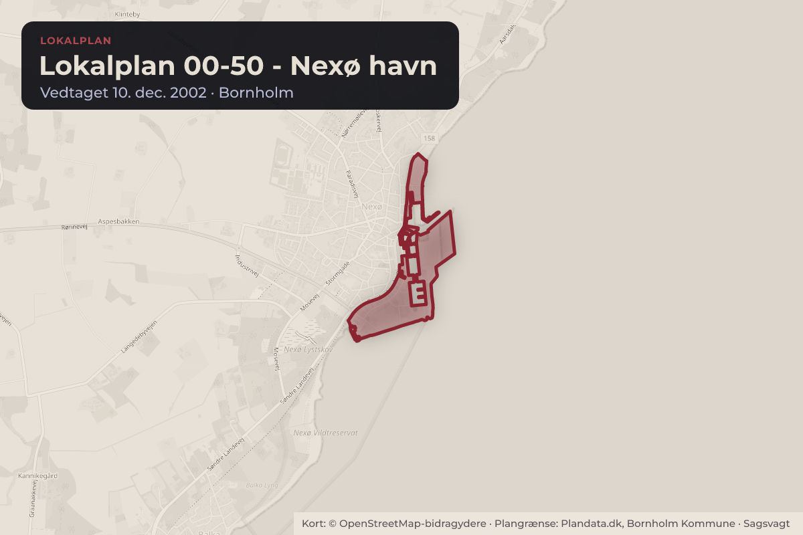
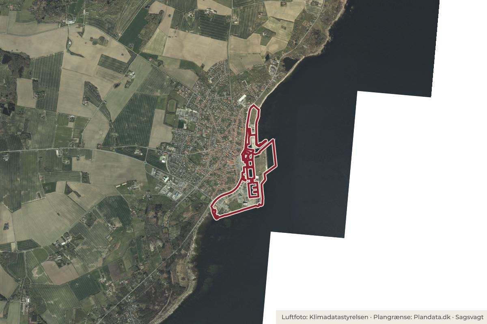

Besluttet 22. september, Miljø- og Erhvervsudvalget, Bornholm
Ændring af igangsættelsen af lokalplanlægning for boliger på Nordmolen på Nexø Havn

Kort: © OpenStreetMap-bidragydere. Plangrænse: Plandata.dk, Bornholm Kommune.

Kort fortalt
- Hvem
- Miljø- og Erhvervsudvalget, Bornholms Regionskommune
- Hvornår
- Tirsdag 22. september 2026
- Status
- Besluttet. Indstilling anbefales. Indstilling anbefales. Helle Munk Ravnborg kan ikke medvirke til princippunkt B, idet det ønskes, at samtlige boliger opføres til helårsbeboelsesformål med bopælspligt således, at Nexø bevares som en by med bopælspligt. Dertil forekommer det uhensigtsmæssigt at etablere lejligheder uden bopælspligt, som kan udvikle sig til et skyggehotel, klos op og ned at et hotel med hotellejligheder.
Er noget forkert her? Skriv til os
Læs hele sagen Kommunens egen tekst
Indstilling
Direktionen indstiller, at
Udarbejdelsen af kommuneplantillæg og lokalplan for Nordmolen på Nexø Havn
igangsættes med afsæt i principperne i punkt A-H i sagsfremstillingen.
Sagsfremstilling
Den oprindelige beslutning
Kommunalbestyrelsen besluttede den 27. april 2023 at igangsætte lokalplanlægningen for 100
boliger og erhvervsareal på Nordmolen i Nexø Havn. Beslutningen er vedlagt som bilag 2.
Det areal, der var omfattet af beslutningen, var begrænset til den matrikel, hvor boligprojektet
skulle etableres. På daværende tidspunkt arbejdede administrationen ud fra en tidligere
beslutning om, at hele Nordmolen skulle indgå i en større rammelokalplan.
Den tidligere rammelokalplanlægning
Rammelokalplanen skulle blandt andet muliggøre etableringen af en strandpark samt danne
grundlag for håndteringen af trafikale forhold og rekreative opholdsarealer på de tilstødende
landarealer. Beslutningen om etablering af strandparken og den tilhørende
rammelokalplanlægning er vedlagt som bilag 3.
Kommunalbestyrelsen besluttede imidlertid den 29. juni 2023, at strandparksprojektet skulle
standses. Beslutningen er vedlagt som bilag 4.
Ændrede planlægningsforudsætninger
Det betyder, at den planlægning, der oprindeligt var forudsat omkring boligprojektområdet, ikke
længere forventes gennemført. Strandparkens rammeplanlægning kan derfor ikke indgå i en
samlet planmæssig sammenhæng med boligprojektet.
Figur 1. Arealet, der er omfattet af den tidligere beslutning om at lokalplanlægge for boliger på
Nexø Havns Nordmole, fremgår af kortet ovenfor.
Behov for et større planområde
Det er nødvendigt at udvide planområdet for boligområdet, så det som minimum omfatter de
arealer, der skal anvendes til parkering for boligerne, adgangsvej fra Ndr. Strandvej, herunder
redningsvej, samt attraktive udendørs opholdsarealer.
Administrationen foreslår derfor, at planområdet udvides til at omfatte hele Nordmolen, som
vist på kortet nedenfor.
Figur 2. Forslag planområde til kommune- og lokalplanlægning
Hensynet til molens øvrige aktører
Ved at udvide planområdet kan lokalplanen samtidig fastlægge rammer, der varetager
hensynet til både besøgende på molen og molens øvrige virksomheder. Det kan eksempelvis
ske ved at sikre, at parkeringsarealer og vejadgang kun etableres på steder, hvor de fungerer
hensigtsmæssigt for alle molens aktører.
Med lokalplanen fastlægger kommunalbestyrelsen således den overordnede retning for
områdets anvendelse og udvikling – også for de eksisterende erhvervsdrivende, som vil blive
inddraget i den videre planlægning.
Behov for udvidelse af anvendelsesmulighederne
Beslutningen af 27. april 2023 gav mulighed for at planlægge for op til 100 boliger. I det videre
arbejde har det imidlertid vist sig nødvendigt at udvide anvendelsesmulighederne, så der også
kan etableres hotel på det areal, hvor fiskefabrikken ScanBio A/S i dag er beliggende.
Miljøkonflikten mellem fiskeri og boliger
Baggrunden er en miljøkonflikt mellem de skibe, der leverer og afhenter produkter fra
fabrikken, og den planlagte boliganvendelse, som er miljøfølsom. Efter planloven kan der som
udgangspunkt ikke vedtages lokalplan for støjbelastede arealer, medmindre det kan
dokumenteres, hvilke afskærmningsforanstaltninger der kan etableres for at sikre, at
Miljøstyrelsens vejledende støjgrænser overholdes.
Der har været en omfattende dialog mellem Gefion Group A/S, som har stillet rådgivere til
rådighed, Nexø Havn A/S, ScanBio A/S og Bornholms Regionskommune. Det har imidlertid
ikke været muligt at identificere foranstaltninger, der i tilstrækkelig grad kan begrænse
støjudbredelsen fra ScanBio A/S’ skibe.
ScanBio A/S’ bygninger og den foreslåede løsning
ScanBio A/S har i henhold til sin kontrakt med Nexø Havn A/S en umiddelbar ret til at benytte
bassinet og kajarealerne. For at løse miljøkonflikten har Gefion Group A/S derfor valgt at indgå
en købsaftale med ScanBio A/S om overtagelse af virksomhedens bygninger. Som følge heraf
vil driften i bassinet ophøre.
Købsaftalen er betinget af, at et kommende plangrundlag giver mulighed for at etablere hotel
på fiskefabrikkens areal. Det bemærkes, at kommunalbestyrelsen ikke er bundet af en aftale
mellem to private parter.
Principper for ny planlægning
Behovet for et større planområde og behovet for at kunne etablere hotel i planområdet afleder
derfor, at det er nødvendigt at kommunalbestyrelse tager stilling til, om den allerede igangsatte
lokalplanlægning skal ændres.
Administrationen foreslår, at den videre planlægning tager udgangspunkt i følgende principper:
A. Planområdets afgrænsning
Planområdet kommer til at omfatte hele nordmolen som vist på figur 2.
B. Boliger
De 100 boliger anvendes i overensstemmelse med beslutningen af 27. april 2023.
Boligernes volumen og bygningskroppe tager udgangspunkt i projektet vist i bilag 1.
C. Liv og aktivitet på molen
Bebyggelsens funktioner skal understøtte liv og aktivitet på molen og henvende sig til
både beboere, borgere og besøgende, som ikke bor i det planlagte byggeri. Dette
princip skal gælde for hele planområdet. Der skal i den videre planlægning arbejdes
med levende stueetager.
D. Hotel og restaurant
Der kan etableres hotel- og restaurantformål på det areal, hvor ScanBio A/S i dag har
sine bygninger.
E. Butiksformål
Planlægningen arbejder videre med muligheden for at etablere mindre salgs- eller
butiksenheder i området for at undersøge, om det kan bidrage til at skabe mere liv i
området og samtidig tilpasses bymidtestrukturen i Nexø samt gældende regler for
detailhandel, herunder kommunens detailhandelsanalyse fra 2026.
F. Adgangsvej og trafikal afvikling
Der skal etableres en adgangsvej langs molens østside, som kan betjene alle molens
aktører og imødekomme behovet for bilkørsel, affaldshåndtering, varelevering og
redningskørsel. Østsiden skal desuden kunne anvendes af bløde trafikanter som
transportforbindelse.
Molens vestside skal primært anvendes til rekreative formål, men samtidig fungere som
en sammenhængende stiforbindelse. Her skal gående både kunne nyde en rekreativ
oplevelse og benytte attraktive forbindelser til molens forskellige aktører.
G. Parkering
Der skal udlægges parkeringsarealer på baggrund af en ny, konkret parkerings- og
trafikanalyse. Etablering af de nødvendige parkeringspladser skal indgå som en
integreret del af projektet og være en forudsætning for opførelse af nyt byggeri.
For hver ny boligenhed skal der etableres mindst én parkeringsplads. Mindst halvdelen
af. Parkeringspladserne skal placeres i umiddelbar nærhed af det pågældende byggeri.
De resterende parkeringspladser kan etableres på en større, fælles parkeringsplads ved
molens nordende.
Planlægningen skal samtidig, gennem parkerings- og trafikanalysen, sikre, at områdets
øvrige aktører fortsat har mulighed for at etablere og tilbyde parkeringspladser.
H. Arkitektur og visuel kvalitet
Bebyggelsens arkitektur skal indpasses i både havnemiljøet og den omkringliggende by.
Der skal stilles krav til bebyggelsens arkitektoniske kvalitet og attraktive fremtræden.
Afvigelse fra det fremlagte projekt vedrørende parkering
Gefion Group A/S’ forslag tager udgangspunkt i en parkeringsløsning, der indebærer etablering
af én parkeringsplads pr. bolig og én parkeringsplads pr. 50 m² erhvervsareal. Af det samlede
parkeringsbehov placeres 30 pladser ved de 100 boliger, mens 20 pladser placeres ved hotelog restaurantbygningen. De resterende parkeringspladser etableres på en større fælles
parkeringsplads nord for den bygning, der i dag huser Værftet.
Administrationen vurderer, at det er en fordel at samle en del af de nødvendige
parkeringspladser på en større fælles parkeringsplads i molens nordlige område. Det frigiver
areal på den øvrige del af molen og skaber dermed bedre muligheder for at etablere attraktive
udendørs opholdsarealer.
Administrationen vurderer imidlertid, at den foreslåede parkeringsløsning placerer for mange
parkeringspladser for langt fra de funktioner, de skal betjene. Det foreslås derfor, at der
etableres én parkeringsplads for hver bolig, der opføres. Mindst halvdelen af
parkeringspladserne skal placeres i umiddelbar nærhed af det byggeri, de betjener, mens de
resterende pladser kan etableres på den større fælles parkeringsplads ved molens nordende.
Der skal desuden etableres handicapparkeringspladser i overensstemmelse med gældende
regler. Parkeringsforholdene vil blive nærmere reguleret i lokalplanen med henblik på at sikre
en hensigtsmæssig og velfungerende parkeringsløsning.
Som led i den videre planlægning skal der udarbejdes en parkerings- og trafikanalyse, der skal
sikre parkeringsforhold for alle områdets aktører. Parkeringspladser til boliger, hotel- og
restaurantformål samt øvrige erhverv må kun etableres på parkeringsarealet ved molens
nordende efter en samlet plan for alle planområdets aktører. Planen skal sikre, at der fortsat er
tilstrækkelige parkeringsmuligheder for molens øvrige erhvervsdrivende.
Økonomiske konsekvenser
Beslutning
Indstilling anbefales.
Indstilling anbefales.
Helle Munk Ravnborg kan ikke medvirke til princippunkt B, idet det ønskes, at samtlige
boliger opføres til helårsbeboelsesformål med bopælspligt således, at Nexø bevares som
en by med
bopælspligt. Dertil forekommer det uhensigtsmæssigt at etablere lejligheder uden
bopælspligt, som kan udvikle sig til et skyggehotel, klos op og ned at et hotel med
hotellejligheder.
Kilde: Bornholms Regionskommune, Miljø- og Erhvervsudvalget, referat fra mødet tirsdag 22. september 2026, punkt 2. Læs den originale sag hos kommunen.